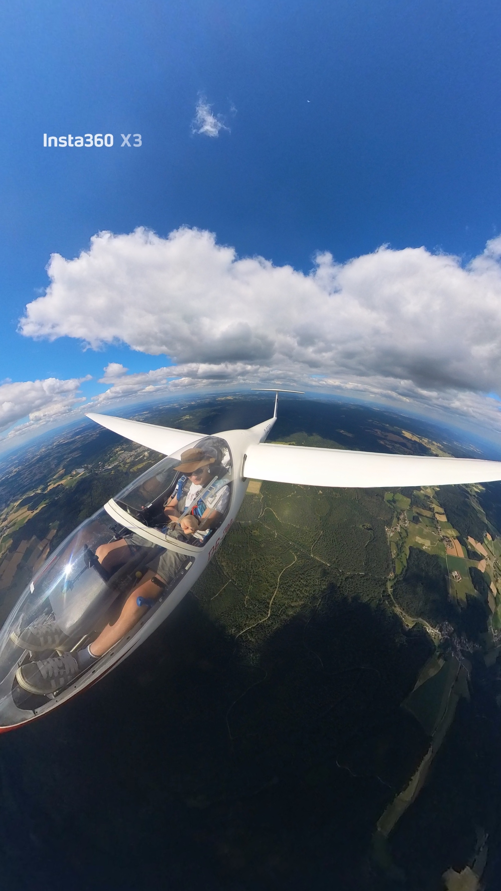
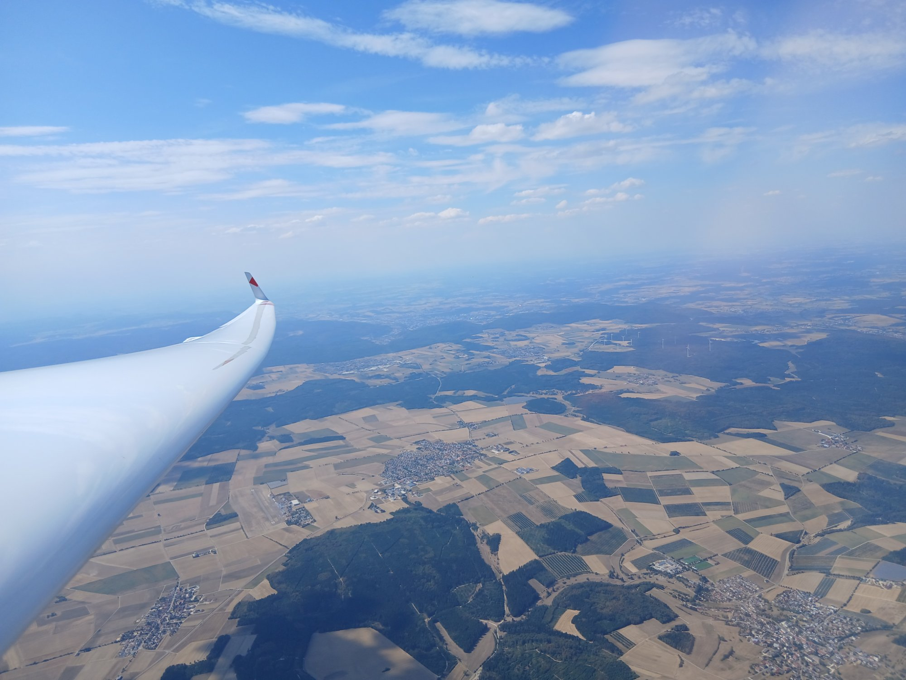
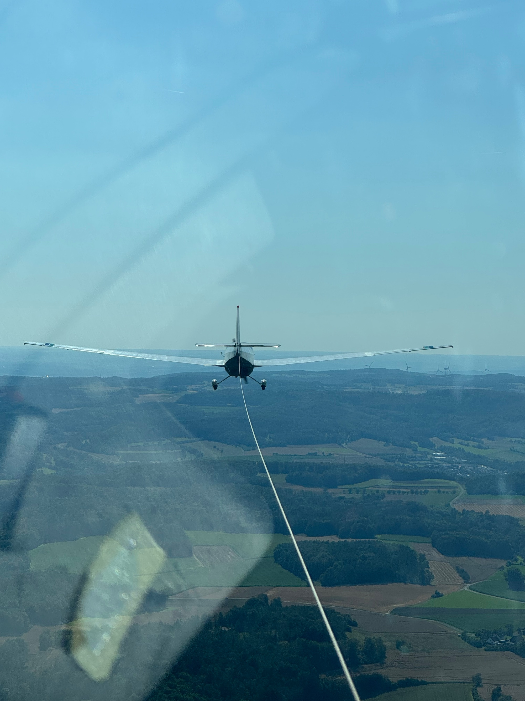

Streckenflug


Du willst mehr als nur eine Runde um den Flugplatz drehen? Dann ist Streckenfliegen genau dein Ding!
Mit unseren Einsitzern Discus und Ventus oder gemeinsam im Doppelsitzer DG geht es hoch- und weit hinaus.
Hunderte Kilometer durch die Luft gleiten, nur angetrieben von der Kraft der Natur, Thermik finden, Höhe gewinnen, die nächste Etappe planen und dabei immer neue Landschaften aus der Vogelperspektive entdecken.
Streckenfliegen verbindet Abenteuer, sportlichen Ehrgeiz und echte Erfolgserlebnisse. Jeder Flug ist anders, jede Herausforderung bringt dich weiter und jeder Kilometer macht stolz.
Sich weit vom Platz zu entfernen, kann anfangs natürlich beängstigend sein, aber keine Sorge! Erfahrene Streckenflieger begleiten dich gerne bei deinen ersten Überlandflügen, ob im Doppelsitzer oder ganz einfach im Teamflug.
Und wenn du nach deinem Schein noch mehr erreichen möchtest, warten spannende Wettbewerbe auf dich! Hier kannst du dich mit anderen Pilotinnen und Piloten messen, dein Wissen über Wetter und Flugtaktik vertiefen und lernen, im Team noch erfolgreicher unterwegs zu sein.
Neue Ziele, neue Herausforderungen und unvergessliche Momente am Himmel – wie weit dich deine Leidenschaft trägt, entscheidest du selbst!


Vereinsrekorde
Michael Sommer flog von Oberhinkofen aus sehr oft Strecken von über 1.000 km.
Unsere Flüge
Die meisten Streckenflüge unserer Pilotinnen und Piloten sind auf WeGlide